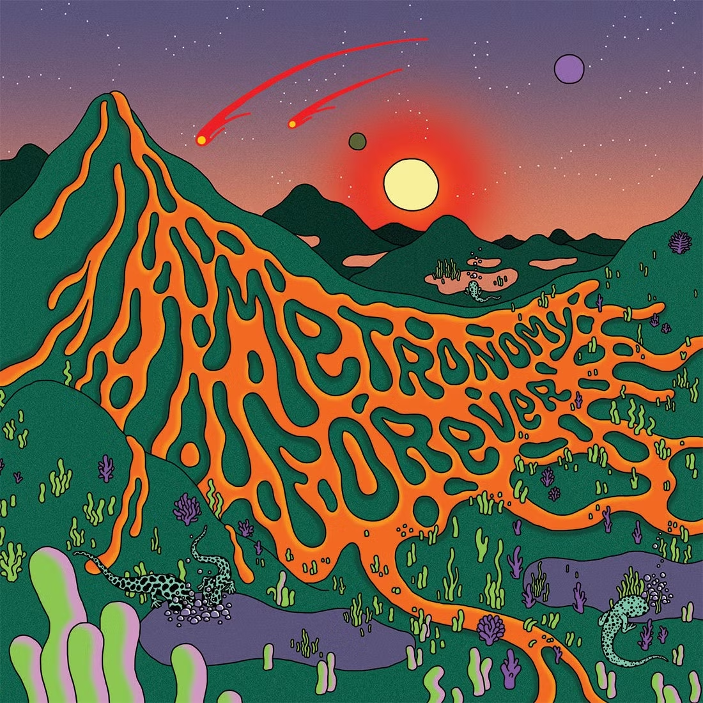

Metronomy Forever - Metronomy

O tempo trouxe benefícios consideráveis para a obra do Metronomy. Se em início de carreira Joseph Mount e seus parceiros de banda pareciam simplesmente brincar com as possibilidades, jogando com diferentes fórmulas e conceitos aleatórios, com o amadurecimento criativo, em The English Riviera (2011), o grupo, hoje completo por Oscar Cash, Anna Prior, Olugbenga Adelekan e Michael Lovett, não apenas passou a adotar uma sonoridade específica, como tem feito dessa criativa base temática o estímulo para cada novo registro de inéditas. Um misto de conforto e permanente transformação, estrutura que ganha novo resultado nas canções de Metronomy Forever (2019, Because).
Tracklist